Experience
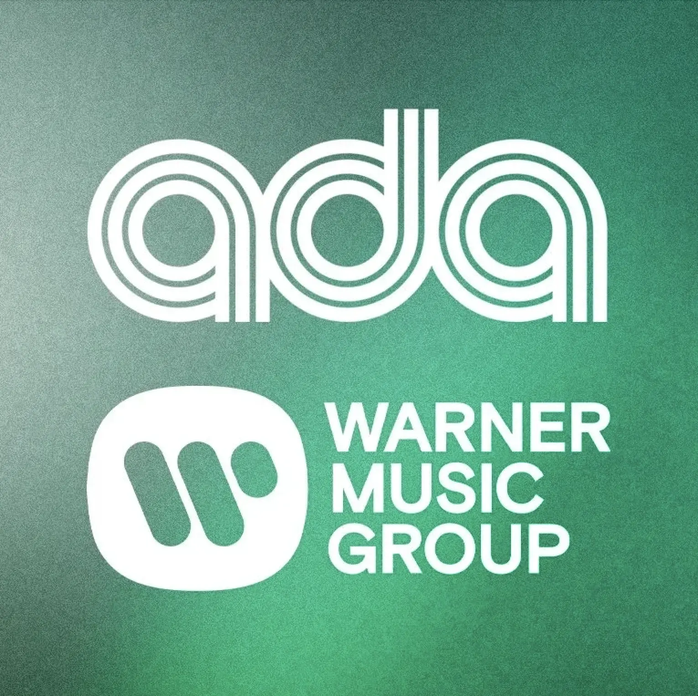
Senior Manager, International Commercial Marketing
Warner Music Group | ADA
April 2026 – Present
- Develop global trade approaches to improve streaming consumption for ADA’s US repertoire in external markets.
- Build and manage relationships with affiliate label commerce teams at ADA/WMG and international DSP partners.
Manager, US Editorial and Marketing
Warner Music Group
Feb 2025 – April 2026
- Lead the Topsify US team on cross-functional marketing campaign execution in partnership with WMG label teams (Atlantic Records, ADA, etc.), artist management, and external partners.
- Automated playlist research via Python/Spotify API, reducing manual workflow by 70%.
- Align global viral marketing strategies with local market insights.
- Developed playlist marketing strategies for superstar acts like Bruno Mars, Benson Boone, Cardi B, Madonna and more.
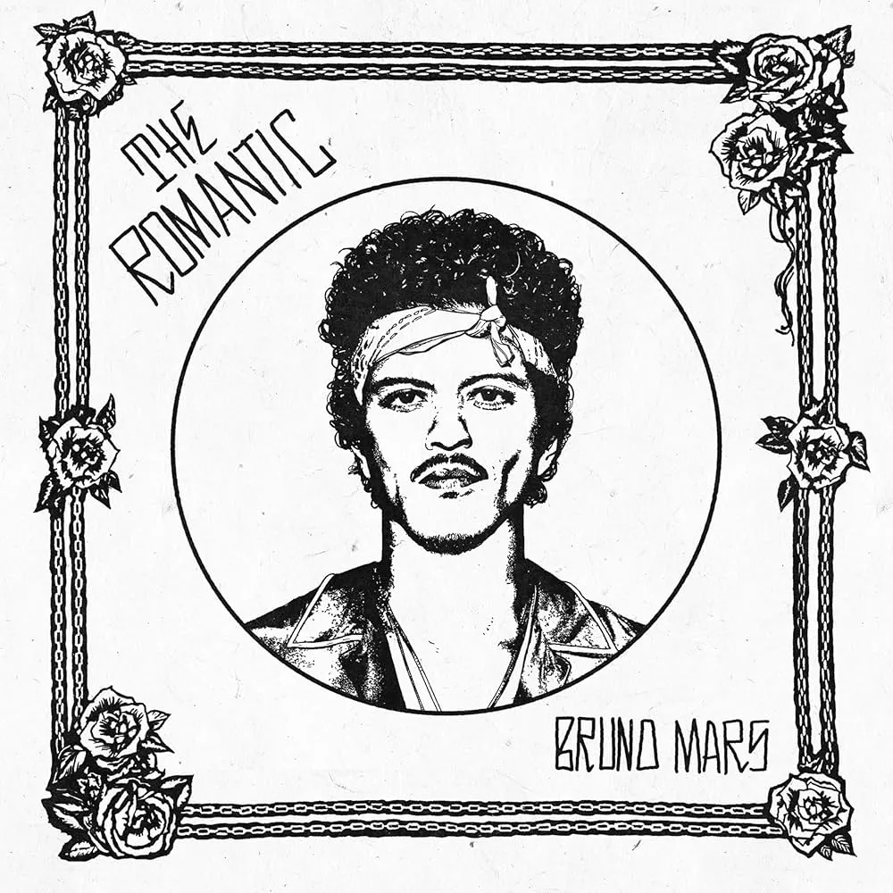
Bruno Mars: Strategic playlist strategy, driving 10M+ streams and 60k follower growth during release week.
Pride Party: Led integrated marketing partnerships with WeHo Pride and LadyLand festival.
Madonna: Optimized artist playlists in collaboration with management
Coordinator, Partner Relations
Sony Music Entertainment
July 2024 – Dec 2024
- Led cross-label DSP partnerships, including Fitness, Social, Gaming, and Jukebox accounts for Legacy, Columbia, and Arista Records.
- Orchestrated features for priority releases through strategic partner pitching.
Addison Rae: Pitched singles to DSPs
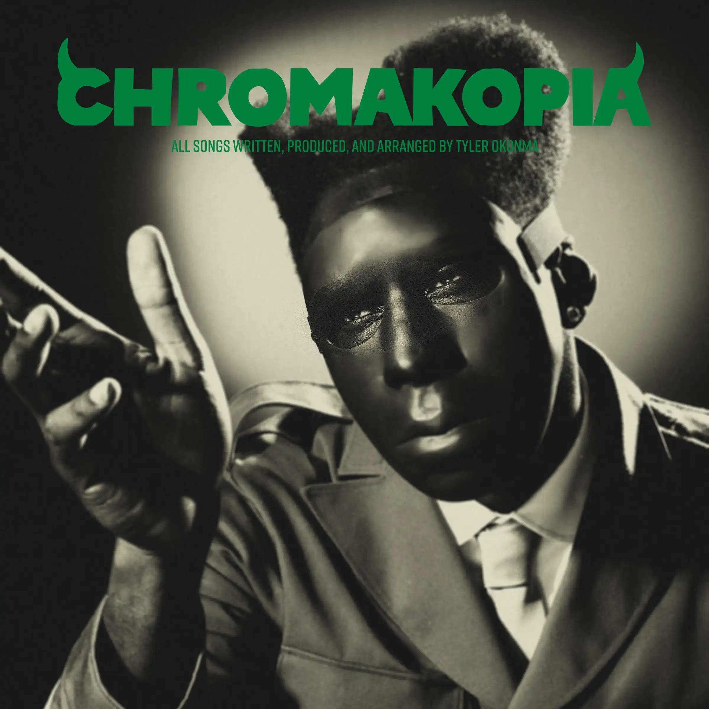
Tyler, The Creator: Late delivery logistics and pitching
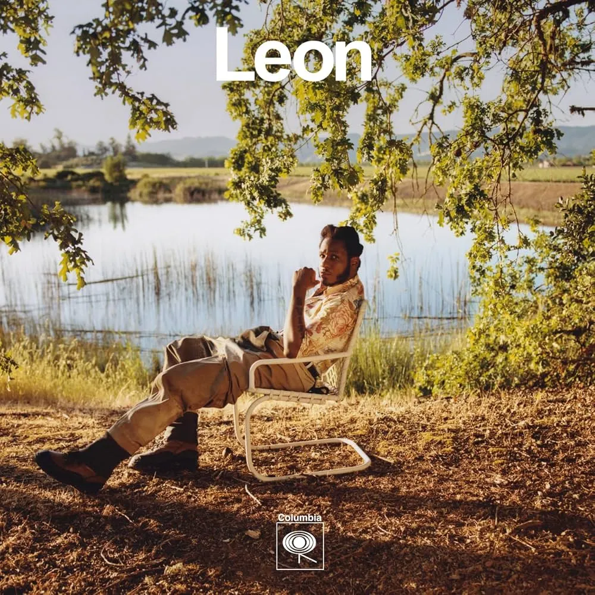
Leon Bridges: Coordinated assets for Apple Music Zane Lowe interview
Coordinator, Central Commercial Partnerships
Sony Music Entertainment
Jan 2023 – July 2024
- Analyzed streaming consumption data via Python and Excel for growth opportunities.
- Devised marketing strategies for the Filtr playlisting brand, increasing streaming consumption by up to 300% YoY.
Tyla: Filtr editorial partnership
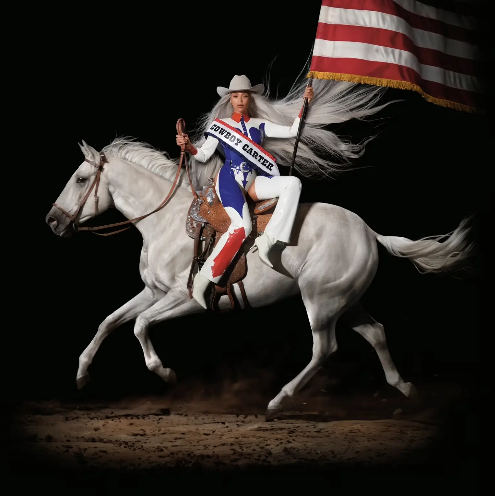
Beyoncé: Release Coordination
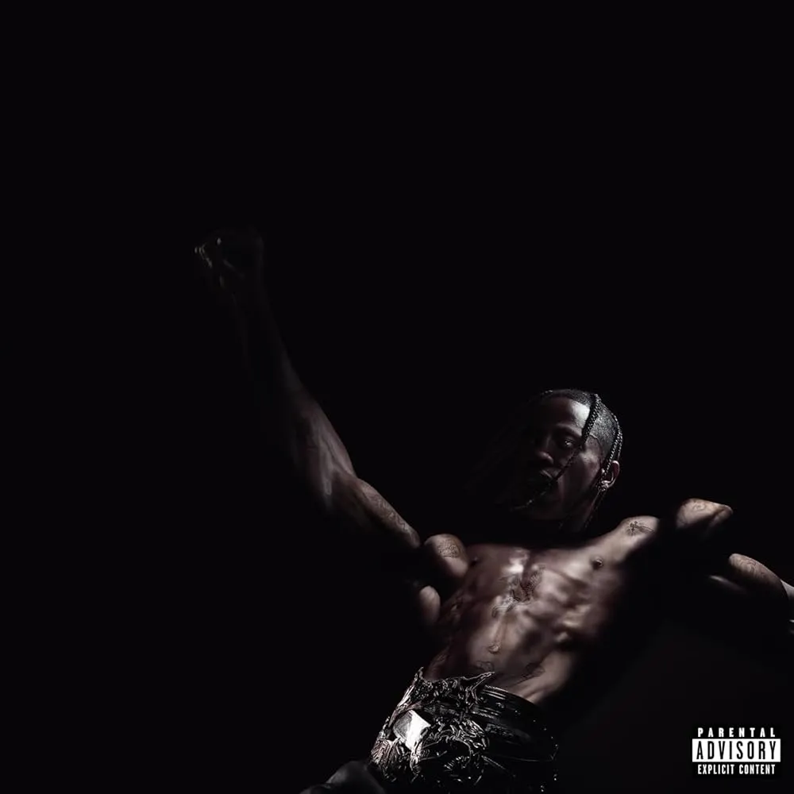
Travis Scott: Late delivery logistics
Coordinator, Digital Marketing
Mascot Label Group
April 2021 – Jan 2023
- Designed media aligned with the artist's creative vision.
- Managed international digital campaigns and improved advertising CTRs by 20%.
- Drove follower growth of up to 370% through social platform best practices.
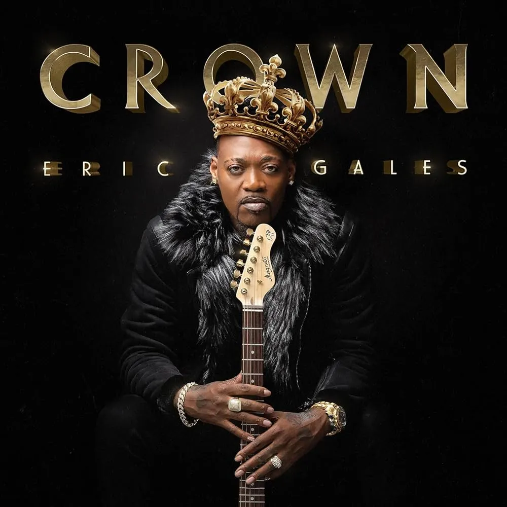
Eric Gales: Digital Ads
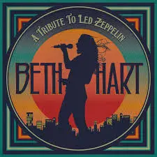
Beth Hart: Social Growth
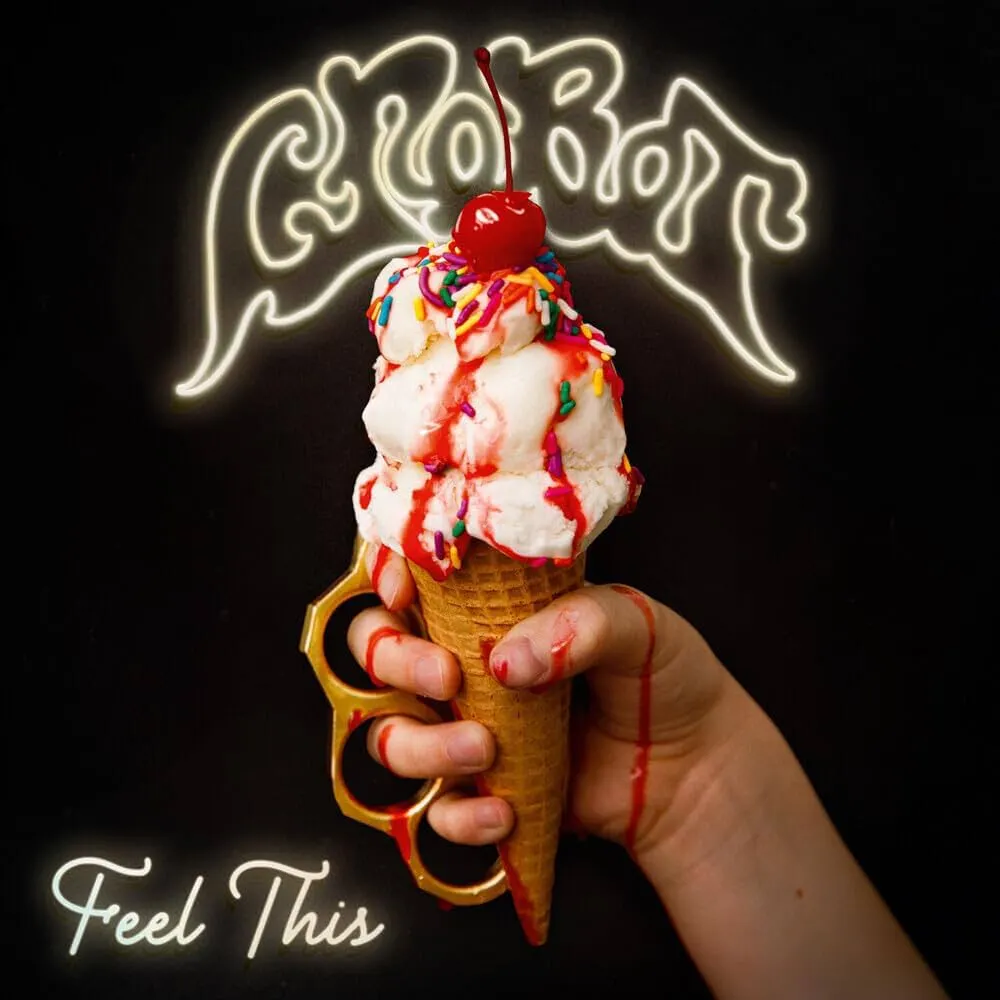
Crobot: Asset creation (Spotify canvases, socials)
Assistant, Marketing
Every Life Well
July 2019 – Mar 2021
- Assessed SEO marketing growth potential for products.
- Collaborated with product management to build and launch a new Shopify webstore.
Intern, Music
musx
Feb 2017 – May 2017
Developed playlists and expanded analytics directly with the CEO.
Issue, Life and Arts
The Daily Texan
Jan 2016 – May 2016
Published album reviews and interviews for the UT Austin student publication.
Concert Gallery
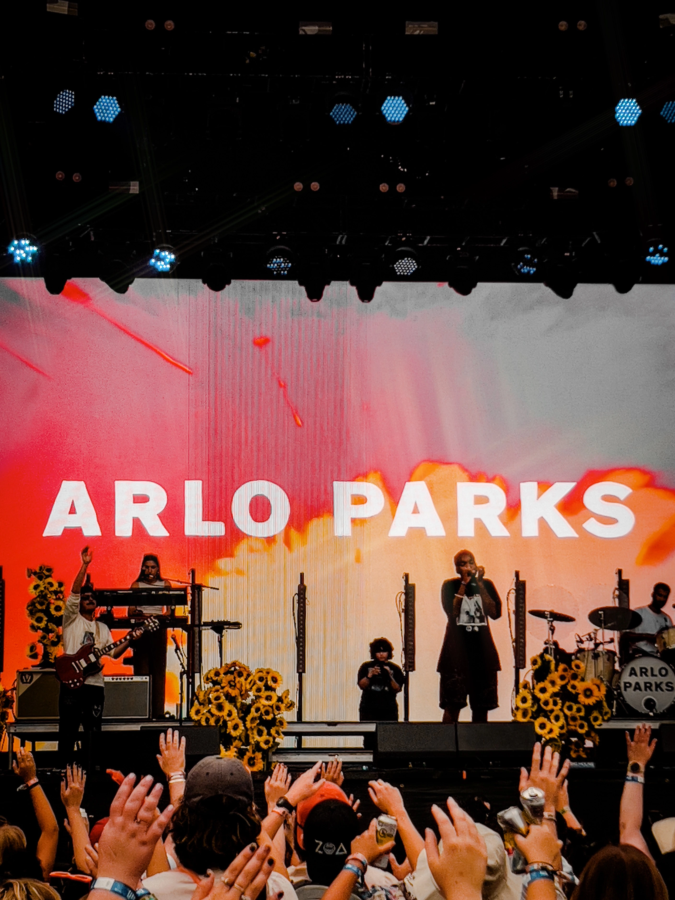
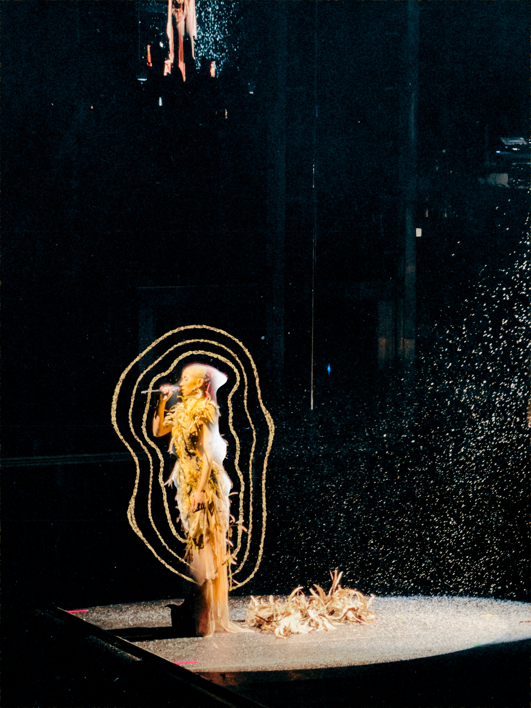